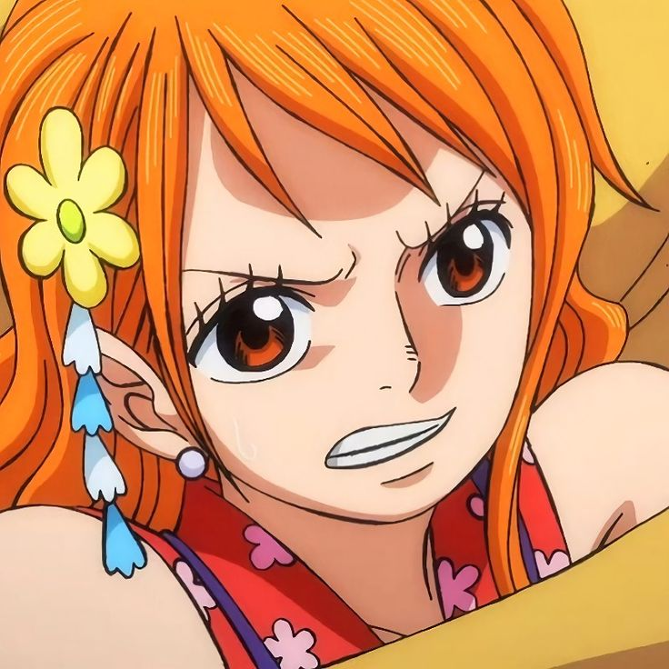
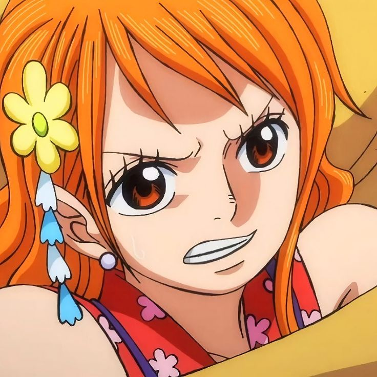
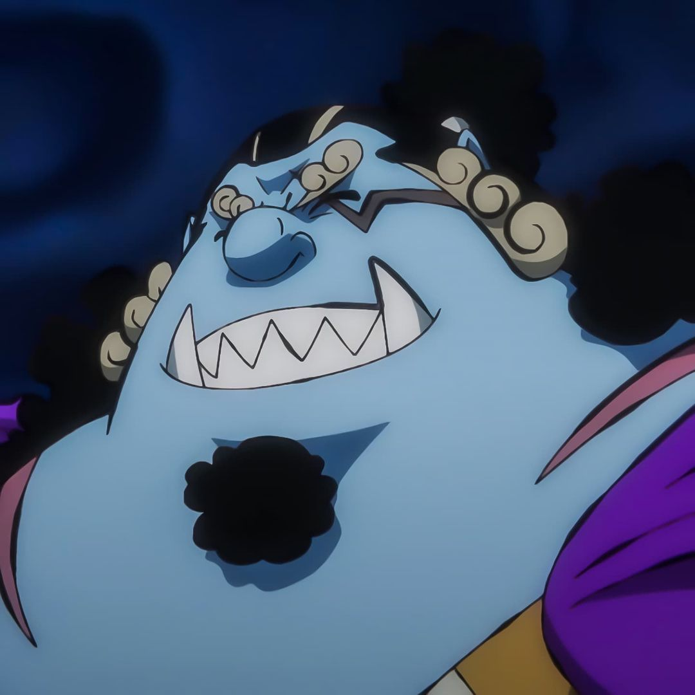
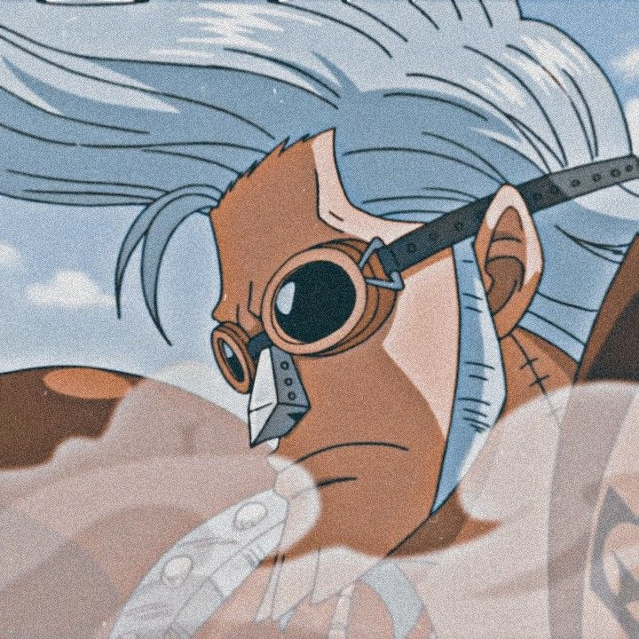
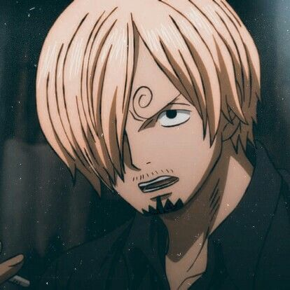
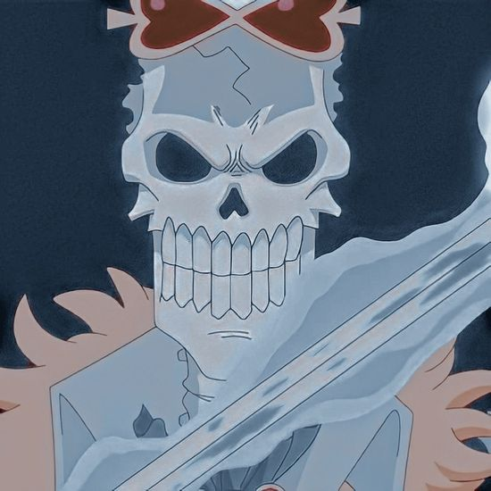
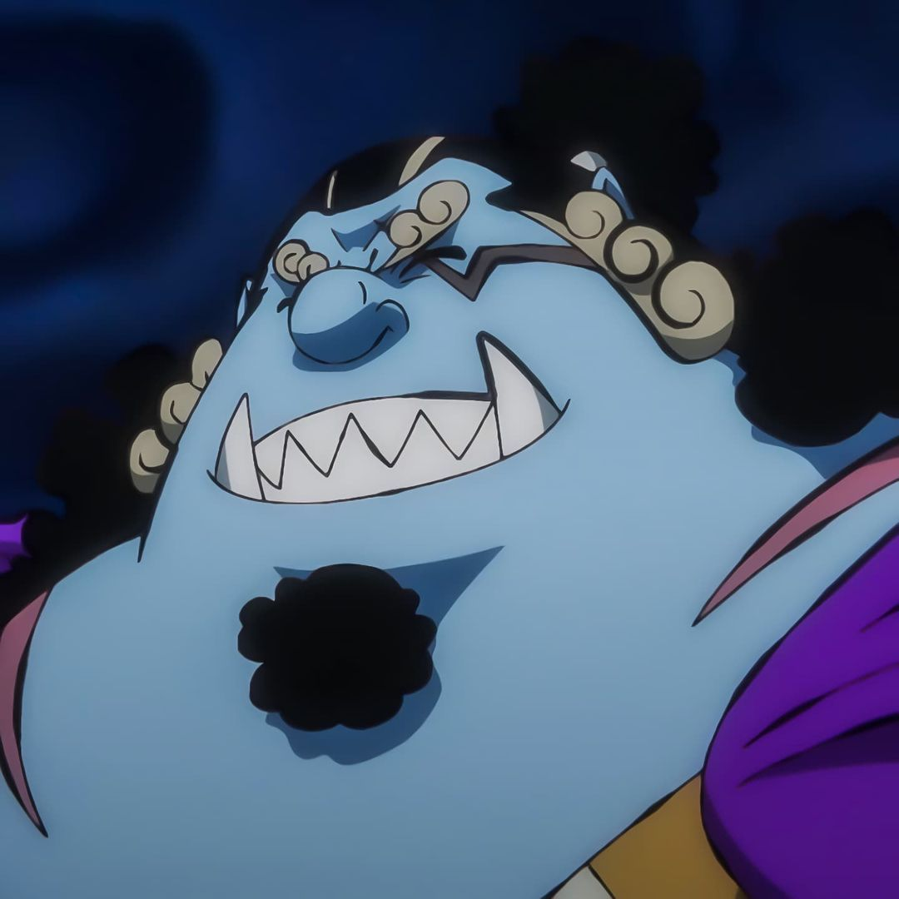
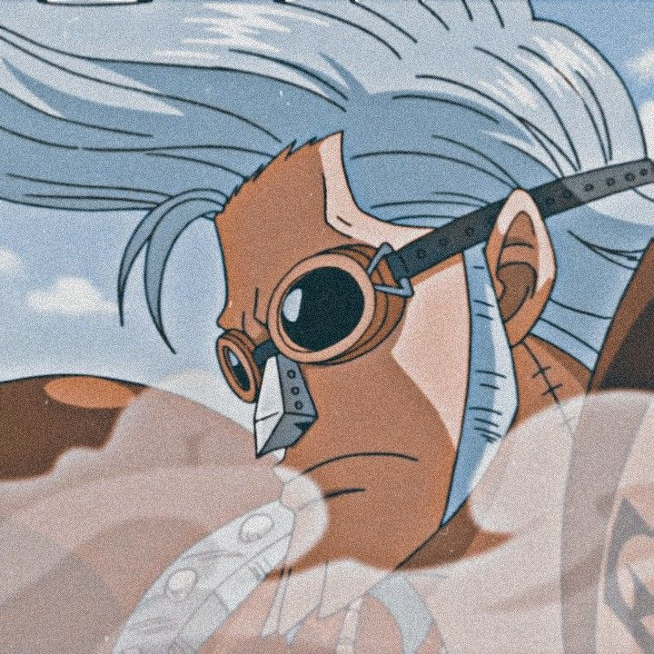
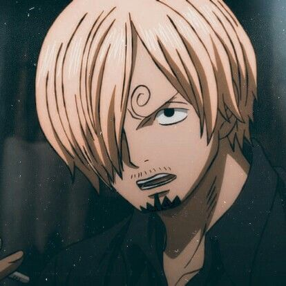
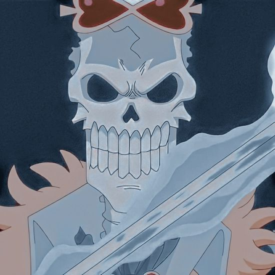

 







What is one piece?
One Piece is the story of a boy named Monkey D. Luffy, who was inspired by Shanks, a pirate who saved
his life,
to become the King of Pirates. At the beginning of the series, twenty-four years before the current
story,
a pirate named Gol D.